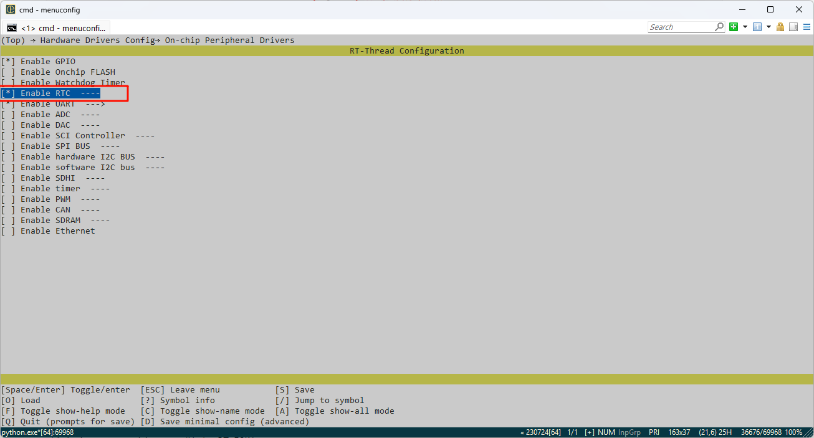
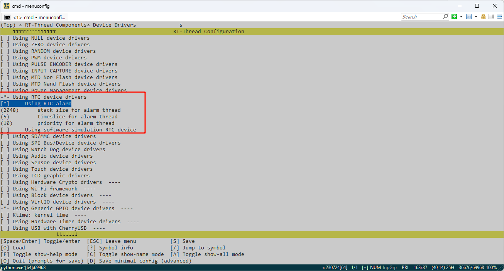
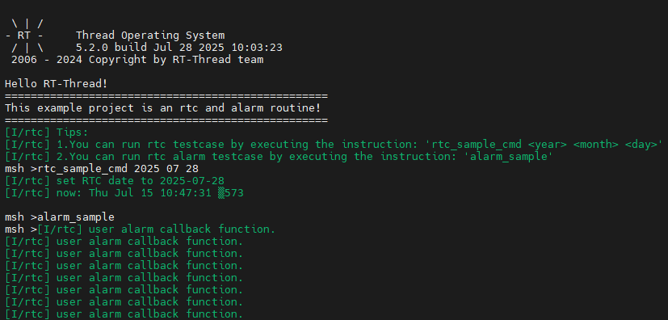

RA8P1 Titan Board 开发板 RTC 及 alarm 使用例程说明
中文|English
简介
本例程主要介绍了如何在 Titan Board 上使用 RTC（Real-Time Clock）实时时钟，RTC 可以提供精确的实时时间，它可以用于产生年、月、日、时、分、秒等信息。目前实时时钟芯片大多采用精度较高的晶体振荡器作为时钟源。有些时钟芯片为了在主电源掉电时还可以工作，会外加电池供电，使时间信息一直保持有效。
RT-Thread 的 RTC 设备为操作系统的时间系统提供了基础服务。面对越来越多的 IoT 场景，RTC 已经成为产品的标配，甚至在诸如 SSL 的安全传输过程中，RTC 已经成为不可或缺的部分。
硬件说明
本例程使用的RTC 设备依赖于LOCO 时钟，此外无需过多连接。
FSP配置说明
打开 FSP，选择对应的工程文件下的 configuration.xml，新增 RTC Stack;

下面进行 RTC 参数的配置，设置 rtc stack name 为 g_rtc，设置 RTC 中断回调函数为 rtc_callback，并配置中断回调优先级；

RT-Thread Settings配置
打开 RT-Thread Settings，找到硬件选项，使能 RTC；

接下来我们配置 RTC，首先需要使能 RT-Thread 的 RTC 设备框架，同时使能 alarm 功能；

示例代码说明
本例程的源码位于/projects/Titan_driver_rtc。
void rtc_sample(int year, int month, int day)
{
rt_err_t ret = RT_EOK;
time_t now;
rt_device_t device = RT_NULL;
device = rt_device_find(RTC_NAME);
if (!device)
{
LOG_E("find %s failed!", RTC_NAME);
return;
}
if (rt_device_open(device, 0) != RT_EOK)
{
LOG_E("open %s failed", RTC_NAME);
return;
}
/* 设置日期 */
ret = set_date(year, month, day);
LOG_I("set RTC date to %04d-%02d-%02d", year, month, day);
if (ret != RT_EOK)
{
LOG_E("set RTC date failed");
}
/* 设置时间 */
ret = set_time(12, 0, 0);
if (ret != RT_EOK)
{
LOG_E("set RTC time failed");
}
/* 延时3秒 */
rt_thread_mdelay(3000);
/* 获取时间 */
get_timestamp(&now);
LOG_I("now: %.*s", 25, ctime(&now));
}
static void rtc_sample_cmd(int argc, char *argv[])
{
if (argc != 4)
{
rt_kprintf("Usage: rtc_sample <year> <month> <day>\n");
return;
}
int year = atoi(argv[1]);
int month = atoi(argv[2]);
int day = atoi(argv[3]);
rtc_sample(year, month, day);
}
MSH_CMD_EXPORT(rtc_sample_cmd, set RTC date: rtc_sample_cmd <year> <month> <day>);
下面代码可创建一个 RTC 闹钟，然后设置 1 秒后唤醒，最后把该函数导入 msh 命令行中。
void user_alarm_callback(rt_alarm_t alarm, time_t timestamp)
{
LOG_I("user alarm callback function.");
}
void alarm_sample(void)
{
rt_device_t dev = rt_device_find("rtc");
struct rt_alarm_setup setup;
struct rt_alarm * alarm = RT_NULL;
static time_t now;
struct tm p_tm;
if (alarm != RT_NULL)
return;
/* 获取当前时间戳，并把下一秒时间设置为闹钟时间 */
now = get_timestamp(NULL) + 1;
gmtime_r(&now,&p_tm);
setup.flag = RT_ALARM_SECOND;
setup.wktime.tm_year = p_tm.tm_year;
setup.wktime.tm_mon = p_tm.tm_mon;
setup.wktime.tm_mday = p_tm.tm_mday;
setup.wktime.tm_wday = p_tm.tm_wday;
setup.wktime.tm_hour = p_tm.tm_hour;
setup.wktime.tm_min = p_tm.tm_min;
setup.wktime.tm_sec = p_tm.tm_sec;
alarm = rt_alarm_create(user_alarm_callback, &setup);
if(RT_NULL != alarm)
{
rt_alarm_start(alarm);
}
}
/* export msh cmd */
MSH_CMD_EXPORT(alarm_sample,alarm sample);
编译&下载
RT-Thread Studio：在 RT-Thread Studio 的包管理器中下载 Titan Board 资源包，然后创建新工程，执行编译。
编译完成后，将开发板的 Jlink 接口与 PC 机连接，然后将固件下载至开发板。
运行效果
按下复位按键重启开发板，输入 rtc_sample_cmd 命令设置 RTC 时间，输入 alarm_sample 命令运行闹钟示例，可以看到板子上会打印如下信息：
